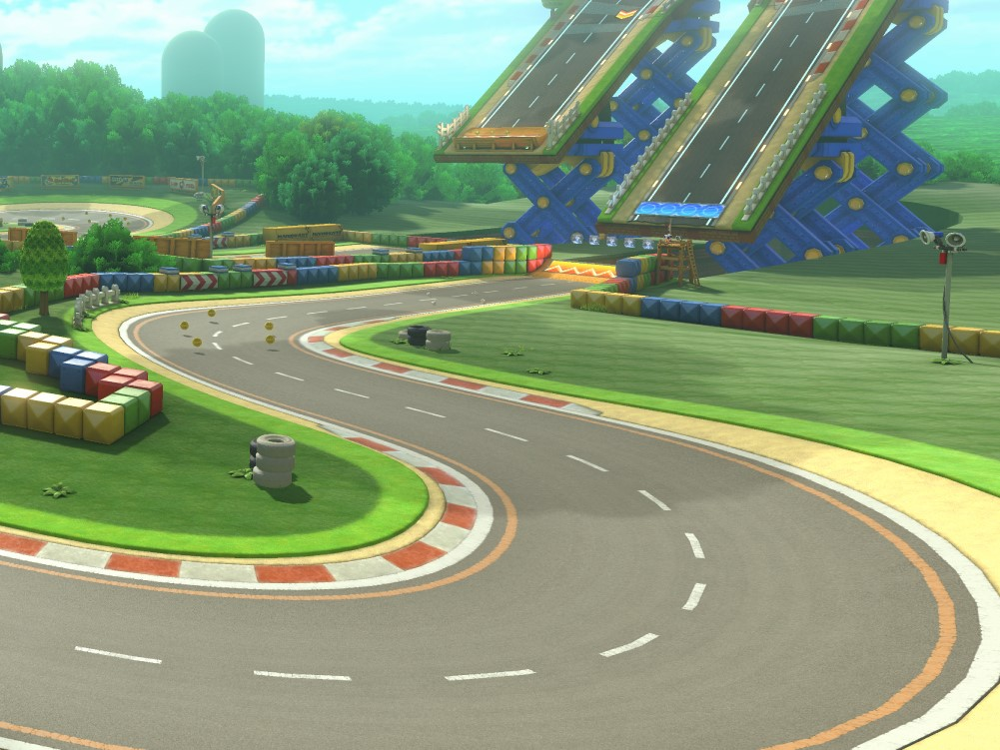
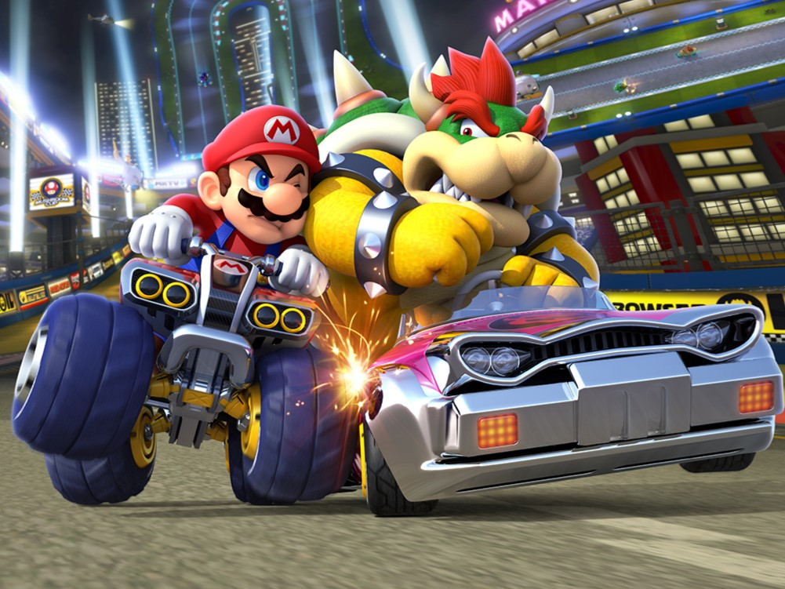
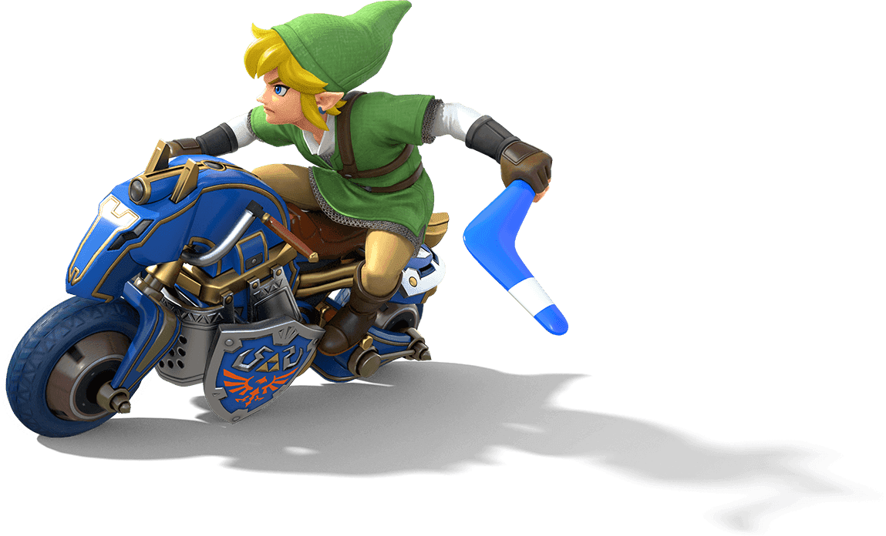

¡JUEGA A MARIO KART DONDEQUIERA QUE VAYAS!
Disfruta del Mario Kart más grande de la historia cuando quieras, donde quieras y como quieras: ¡Mario Kart 8 Deluxe, solo para Nintendo Switch!
Nintendo Switch te permite jugar a Mario Kart cuando, donde y como quieras, tanto con la familia en la pantalla de la tele, como en el parque o en casa de un amigo.
En el modo Inalámbrico, hasta ocho jugadores pueden conectarse para una partida multijugador local. Si estás jugando en la tele o en el modo sobremesa, hasta cuatro jugadores pueden disfrutar de la acción multijugador en pantalla partida.
Conéctate a internet y compite con jugadores de todo el mundo. Hasta 12 jugadores pueden participar en las carreras en línea**, y dos jugadores locales podrán jugar en línea juntos desde la misma consola Nintendo Switch.
¡EL MARIO KART MÁS GRANDE HASTA LA FECHA!
Mario, Luigi, Peach y otros personajes populares de la serie Super Mario están ahora acompañados por pilotos nuevos y veteranos, como Rey Boo, Bowsitos o Bowsy. ¡Incluso los inkling de Splatoon se unen a la carrera!
Una vez que hayas escogido un piloto, elige un vehículo y personalízalo con diferentes ruedas, carrocerías y alerones antes de sacarlo al asfalto.